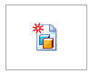

Assembly of Active Model command
The Assembly of Active Model command

creates an assembly from the current model (assembly, part, or sheet metal) file, using the template specified in the Create Assembly dialog box.Note:
If you want the part to remain open, deselect the Close Current Part check box.
If the current model file is a family of assemblies, the active family member is used to create the new assembly.
Note:
This command is not available when you have in-place activated a part or subassembly.
How do I
Hide the remaining parts in an assemblyCreate a new part within an assembly
Create an assembly with the Create Assembly command
Close an in-place activated document
Close a part without saving changes
Learn more
Changing assembly componentsLook up more details
Revert commandHide Previous Level command
Create Part In-Place command
Create Part in Place command bar
Create Assembly dialog box
Create Part In-Place Options dialog box
Close and Return command
Create New Subassembly Dialog Box